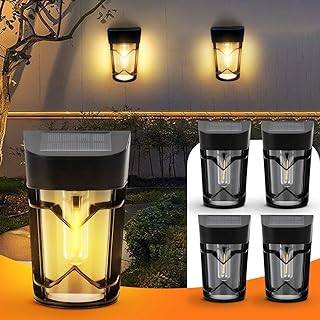
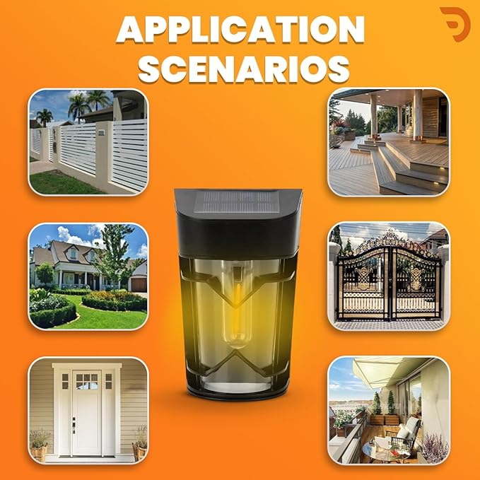

Dravina Solar Light Outdoor | Motion Sensor Solar Lights for Garden,
Home| Wall Solar Light Outdoor Waterproof| Unique Dawn to Dusk Led Bulb
Auto Chargeable Exterior Lamps for Patio- Pack of 2- Warm
actual
M.R.P.: ₹3,499.00
₹1,099 [ ₹549.50 per Item (₹549.50 / Item) ]
Inclusive of all taxes
EMI starts at ₹100 per month
BUY NOW

About this item
SOLAR OUTDOOR LIGHTS - Solar Fence Lights Aren’t Just Give Off Beautiful Warm Lighting For Illuminating The Area
Surrounding Your Fence, They Can Also Help To Spruce Up The Overall Aesthetics Of Your Home Garden.
AUTO ON/OFF & COST-EFFECTIVE - Automatically Turn On At Dusk And Off At Dawn, Fence Solar Lights Run On Energy
Gathered From Sunlight, Provide All Night Lillumination For Fence Deck Yard After Full Charging. No Need To
Manually Turn It On/off Everyday.
EASY INSTALLATION - No Wires. Simply Using The Screws Or Tapes To Fix On Any Fence Deck Or Wall Without Worrying
About The Stability. Measures: 5.1x3.6x2.4 Inch. Each Solar Deck Lights Can Be Separately Illuminated Which
Reduces The Hassle Of Wiring And Connections. Distance Between Two Holes: 2.8 Inches
HIGH EFFICIENCY ENERGY SAVING - Thanks To Advanced Solar Panel Technology, Fence Post Lights Convert Sunlight
Into Energy That Is Stored In Batteries. Our Solar Lights Provide An Eco-friendly So
ALL-WEATHER RESISTANT - Long-lasting And Durable, Made Of Abs, Ip65 Waterproof Solar Outdoor Lights Work Well On
All Kinds Of Weather, Such As Snow, Rain Or Extreme Weather. The Perfect Addition To Your Outdoor Fence Garden
Backyard. When Darkness Was Descending, Solar Lights Giving The Garden Many Eye-pleasing Luminous Decoration.
What is in the box?
- Bulb included
- Batteries Included
- Light kit included
- Wall Mounting Instruments
